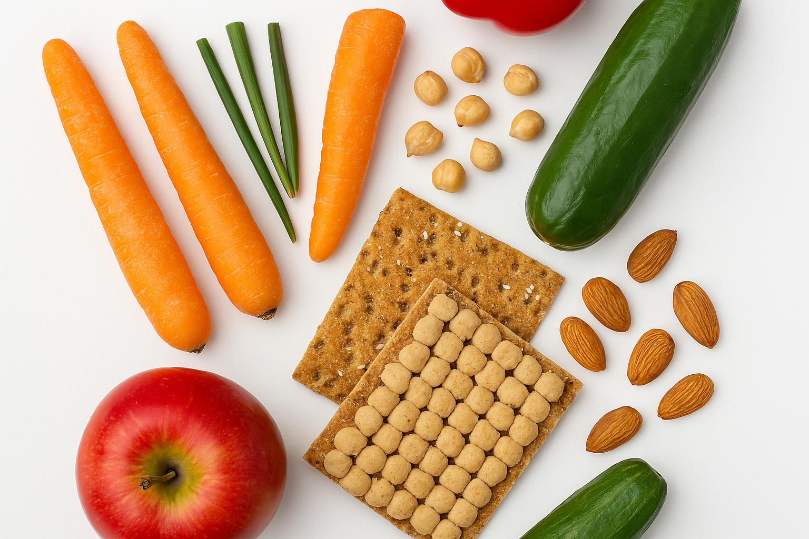

Nuestra Visión
Nuestra visión es un mundo en el cual los alimentos se valoren y aprovechen responsablemente, en donde la seguridad alimentaria esté garantizada para todos y el desperdicio alimentario sea mínimo, generando un impacto positivo significativo en el medio ambiente, la economía y la sociedad.

Qué Hacemos
Educamos
Ofrecemos materiales educativos gratuitos y talleres comunitarios para fomentar prácticas sostenibles en el consumo de alimentos.
Conectamos
Promovemos alianzas entre productores, comerciantes, consumidores y comunidades para reducir excedentes y aprovechar al máximo los alimentos disponibles.
Innovamos
Utilizamos la tecnología para desarrollar soluciones prácticas, como aplicaciones móviles, plataformas web y redes comunitarias que faciliten la reducción del desperdicio alimentario.